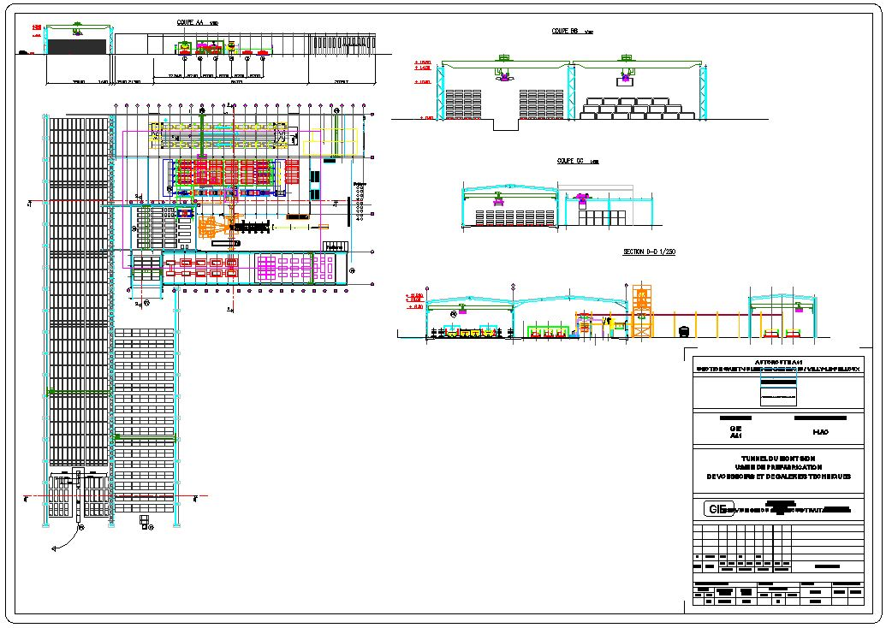
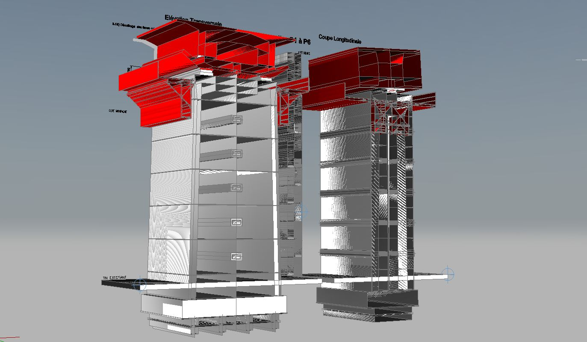
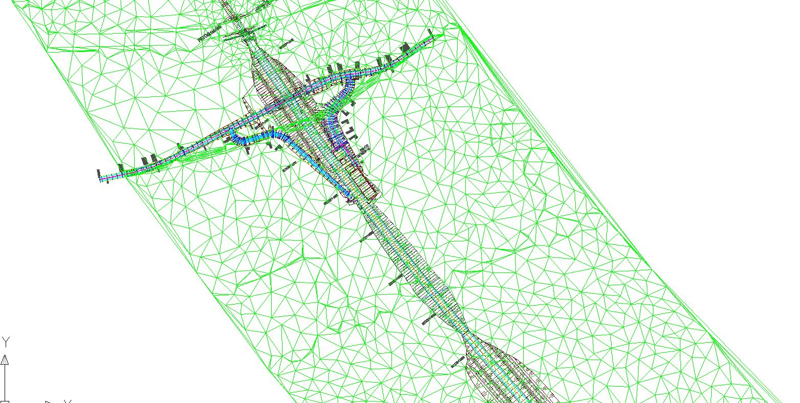
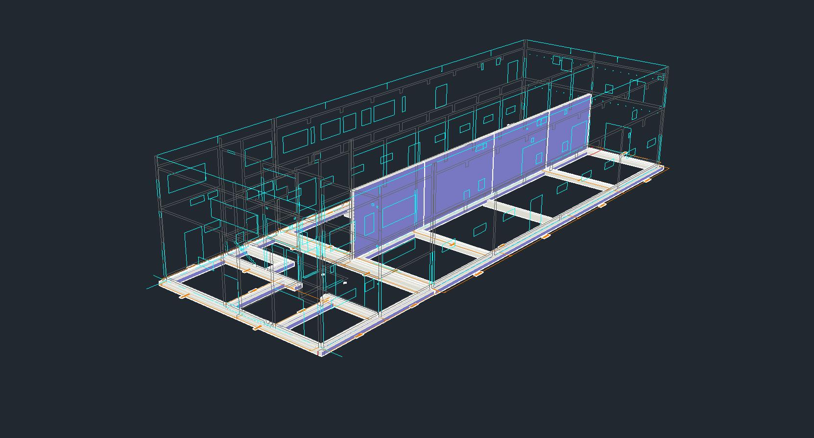
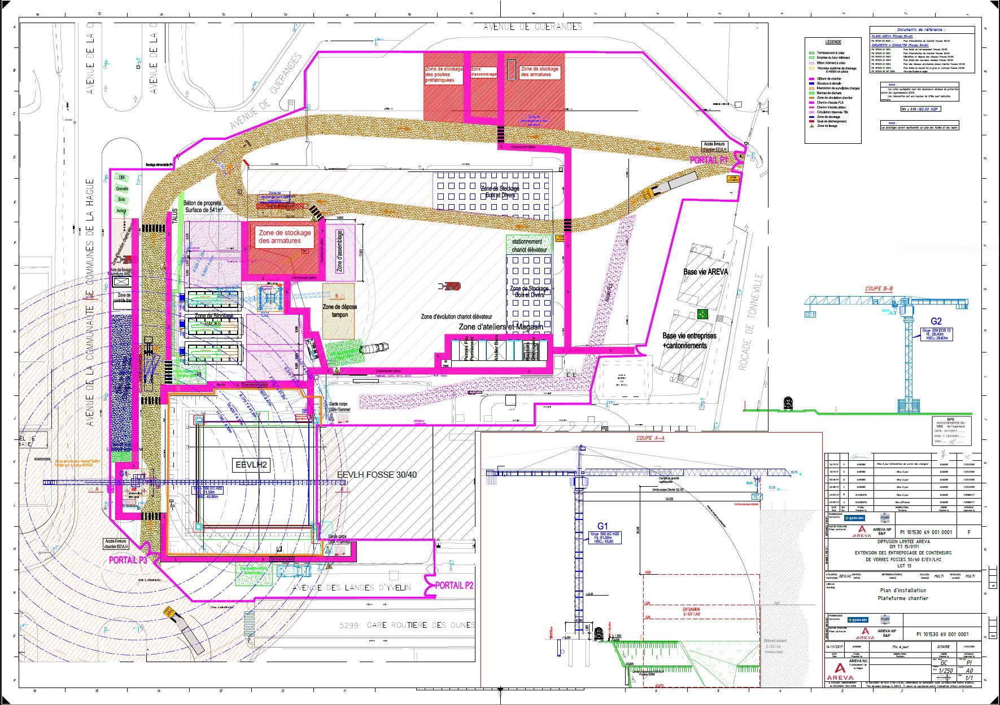
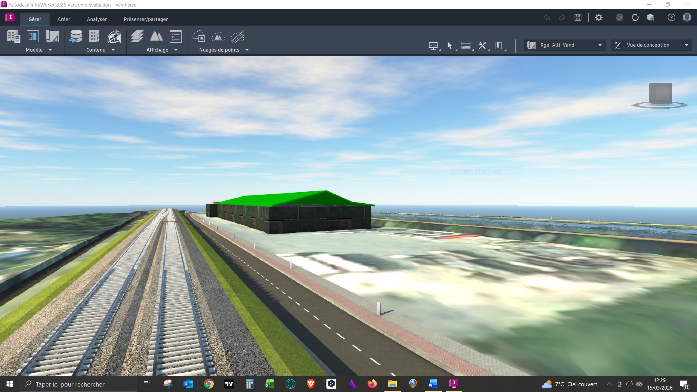

Sur chaque grand chantier, des dizaines d'intervenants produisent des données hétérogènes — plans AutoCAD, maquettes BIM, relevés LiDAR, comptes-rendus, métrés, planning. Coordonner ces données manuellement représente 30 à 50% du temps d'un bureau d'études. Un agent IA appliqué à ce flux permettrait d'optimiser 80% de ce travail — en synthétisant, détectant les incohérences et alertant les équipes en temps réel.
6 cas d'usage réels — vécus sur le terrain






Ce que fait l'agent IA de coordination
Pourquoi CIGÉO est le cas d'usage idéal
250 km de galeries, 5 familles technologiques IA, des milliers d'intervenants sur 150 ans — CIGÉO est le chantier le plus complexe jamais réalisé en France. Les données hétérogènes produites par les robots LiDAR, les capteurs IoT, les équipes BIM et les sous-traitants ne sont aujourd'hui pas unifiées dans un référentiel commun accessible aux chefs de projet en temps réel.
C'est précisément le problème que l'agent IA de coordination résout. Et c'est un problème que j'ai identifié sur le terrain — d'abord comme projeteur sur le Laboratoire souterrain de Bure en 2005, puis comme chargé de communication scientifique Andra en 2024-2025.
La formation AI Engineer OpenClassrooms est le chemin pour construire cet outil. Le terrain, je le connais depuis 20 ans. Il me manque les outils techniques pour le coder.